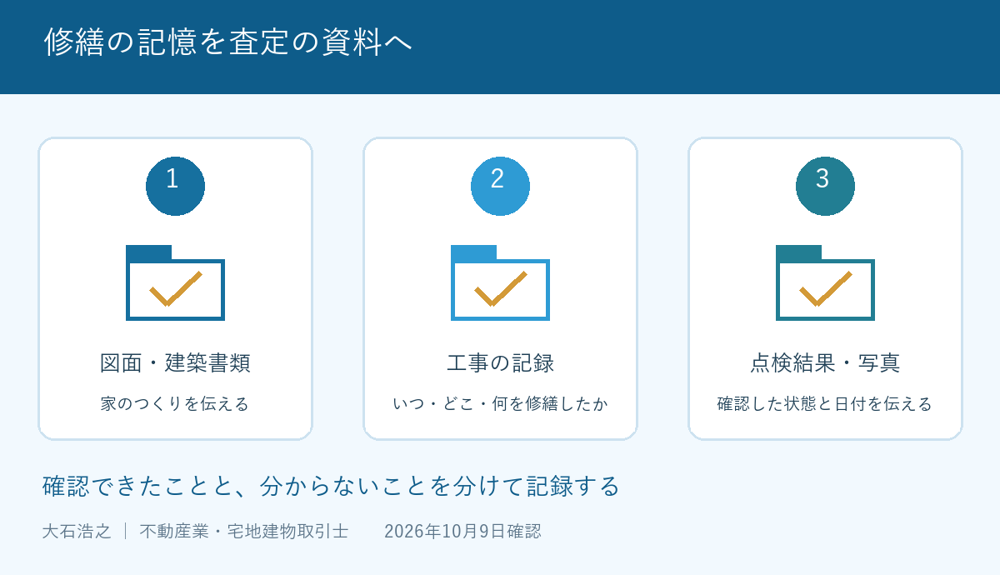

外壁を塗り直し、屋根も直した。大切に手を入れてきた家なのに、査定で築年数だけを見られた気がする。そんな持ち主の方に、私はまず「工事の記録はどこにありますか」と聞くところから始めたいと考えています。
大石浩之（磐田市／不動産業）です。宅地建物取引士として、修繕したという言葉を価格の約束に変えることはできません。ただ、工事の内容が伝わらないまま査定を受ける必要もありません。2026年10月9日に国土交通省の住宅履歴情報の説明を確認しました。
住宅履歴情報は家の工事と点検の記録
国土交通省の「住宅履歴情報とは」は、家のつくりや性能、建築後の点検・修繕・リフォーム等の記録を保存し、蓄積したものと説明しています。具体例には、新築時の図面、建築確認の書類、点検結果、リフォームの記録があります。
住宅履歴情報という名称から、特別な証明書を新しく発行してもらう話だと思うかもしれません。少なくとも同省の説明が示す対象は、日々保管してきた図面や工事の記録を含みます。家の引出しにある書類から、売却の準備を始められるということです。
同省は、記録を点検、不具合の原因確認、リフォームの計画、売却に活用できるとしています。売却では、性能の資料や改修記録などの保存により、建物価値の適正な評価や円滑な売却が期待できるという説明です。
私は、手を入れてきた家を、記憶だけでなく資料で説明できる点を評価します。持ち主の思い入れを買主にそのまま負担してもらう話ではなく、何を確認できる建物なのかを示せます。売却を見送った場合も、次の点検や修繕に使える記録です。
その上で注文したいのは、「記録があれば高く売れる」と言い切る案内です。国土交通省の説明は価格上昇の保証ではありません。記録を査定のどの判断に使ったのか、不動産会社は持ち主に分かる言葉で示してほしいと思います。
査定へ渡す資料は３つに分ける
住宅履歴情報を査定へ渡す際は、家のつくりを示す資料、工事の記録、状態を確認した資料の三つに分けるのが私の提案です。すべてを年代順の一束にするより、何を説明するための書類かが伝わります。
| 資料の束 | 具体例 | 査定担当へ伝えること |
|---|---|---|
| 家のつくり | 図面、建築確認の書類 | 新築時か、変更後か |
| 工事の内容 | 見積書、工事記録、施工写真 | 時期、場所、実施した範囲 |
| 確認した状態 | 点検結果、調査報告書 | 調査日、指摘事項、その後の対応 |
「屋根を直した」という説明なら、屋根全体なのか、一部の補修なのかを分けます。工事の依頼時の見積書だけでは、実際にどこまで施工したかが分からない場合もあります。完了の記録や写真と組み合わせて、できる範囲で照合してください。
領収書は支払った事実の手掛かりですが、明細がなければ工事範囲の説明は足りません。私は、金額の大きさを強調する前に、対象の部屋や外壁面、交換した設備を添えるよう勧めます。修繕に使った金額を、そのまま査定へ足し算しないためです。
書類の束には、「原本」「写し」「家族の記憶」を区別した付箋を添える方法があります。本人が覚えている時期と、領収書の日付が違っても、都合のよい方へ統一しないでください。何の日付なのかを施工会社へ確かめる質問として残します。
査定書を受け取るときは、査定額の根拠と価格の違いも合わせて確認してください。私なら、「この修繕資料を、建物の評価のどこへ反映したか」と聞きます。高い査定額だけを比べるより、説明の違いが見えます。

記録の強みと、査定で言い過ぎないこと
住宅履歴情報は、過去の工事や点検を説明する材料であり、現在の建物全体が健全だと証明するものではありません。私は、過去の記録と現在の状態を、査定で別の欄として扱うのが適切だと考えます。
雨漏りの補修記録がある場合も、「補修した日」「工事の範囲」「その後に確認した内容」を分けて説明します。長い間、空き家で室内を見ていなかったなら、今は不明と伝えます。記録があるからといって、未確認の期間まで問題なしにはできません。
国土交通省は、履歴情報が不具合の原因を特定する際の参考になると説明しています。過去の不具合を示す記録も、家の理解に役立つ資料です。私は、査定に不利そうだという理由で、補修前の写真や指摘事項を外すことには反対です。
現在の状態を追加で調べたい場合は、建物状況調査を頼む条件を参考に、調査の目的を決めてください。過去の点検資料を先に渡せば、どの箇所を気にしているのかを調査者へ伝える材料になります。
資料を揃えるためにどこまで費用をかけるか、私は迷うこともあります。古い図面が見つからない家で、売却の予定も固まらないうちから、新たな調査を一式頼むのがよいとは限りません。手元の記録で分かる範囲と、追加確認が必要な範囲を分けてから考えます。
記録の保管状況などを伝える表示制度については、安心Ｒ住宅の条件で扱いました。住宅履歴情報を集めることと、その表示を使えることも別です。まずは、手元の資料を正確に査定担当へ渡すところに集中してください。
磐田・袋井で家族から資料を集める手順
磐田市・袋井市の自宅や実家を査定する前には、資料を持っている人と保管場所を一枚に書くよう、私は提案します。本人、離れて暮らす子、工事を頼んだ家族で、知っている内容が違う場合を想定した準備です。
親御さんが施設に入居している場合は、書類を探すために何度も帰宅をお願いする前に、保管場所を確認します。施工会社への照会を家族が行うなら、どの物件の何の工事について、誰が問い合わせるかを揃えます。連絡先の分からない工事は、そのまま不明欄に残します。
私はこう考えます。家族が一つの机で資料を広げるなら、「いくらかけた家か」より、「何年にどこを直した家か」を先に書きたい。見積書と写真を並べ、施工範囲が合うかを確かめる。売るかどうかが決まらなくても、その作業は次の修繕にも使えます。これは相談現場の実話ではなく、私が勧める資料整理の場面です。
原本は保管したまま、査定依頼には控えを渡す方法を考えます。振込口座など査定に関係しない情報の共有範囲も、渡す前に整理します。一方で工事場所や日付まで消してしまうと、資料の意味が薄れます。何に使う写しかを家族と依頼先で合わせます。
追加工事を決める前に記録を１件探す
住宅履歴情報の整理で今日できることは、直近の修繕の資料を一件探し、工事日、場所、内容を書き出すことです。資料がなければ記憶だけだと明記します。売る前にきれいにしようと追加工事を頼むより先に、今ある記録を査定へ渡せます。
国土交通省は2026年９月４日に、10月１日から31日までの住生活月間を案内しました。この記事は、その期間に家の記録を見直す提案です。住宅履歴情報の仕組み自体が2026年10月に始まったという意味ではありません。
- 図面、工事記録、点検結果を分ける。
- 不明な年月や未確認の状態を、そのまま記す。
- 査定担当へ、資料をどう評価に使ったか聞く。
富士ヶ丘サービスは磐田・袋井に特化し、介護と不動産を一体で相談できる窓口です。家族が困らない売却へ、私は追加工事を急がせず、手元の記録から案内します。建物の適法性、登記や税務などの個別判断は、建築士、司法書士、税理士などの専門家に確認してください。